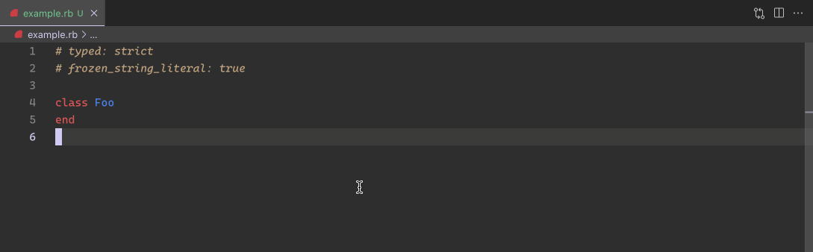

class RubyLsp::Requests::ShowSyntaxTree

Show syntax tree is a custom LSP request that displays the AST for the current document or for the current selection in a new tab.
Example¶ ↑
# Executing the Ruby LSP: Show syntax tree command will display the AST for the document 1 + 1 # (program (statements ((binary (int "1") + (int "1")))))
Public Class Methods
new(document, range)
click to toggle source
Calls superclass method
RubyLsp::Requests::BaseRequest::new
# File lib/ruby_lsp/requests/show_syntax_tree.rb, line 24 def initialize(document, range) super(document) @range = range end
Public Instance Methods
run()
click to toggle source
# File lib/ruby_lsp/requests/show_syntax_tree.rb, line 31 def run return "Document contains syntax error" if @document.syntax_error? return ast_for_range if @range output_string = +"" PP.pp(@document.tree, output_string) output_string end